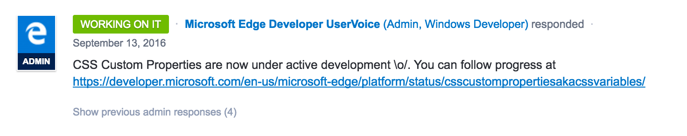

@keithjgrant
Intercontinental Exchange/New York
Stock Exchange
CSS in Depth, Manning Publications (2017)
CSS Specification
Who are the W3C?
W3C
Oversees standards
for the Open Web Platform
Dozens of working groups, including CSS WG
CSS WG
100+ members:
- W3C staff (6)
- W3C invited experts (10)
- Representatives from W3C member companies
Preprocessors


Proprocessor features:
- Nested selectors
- Variables
- Arithmetic
- Mixins
- Extends
- Color manipulation
- File splitting
Contents may shift during flight
Nested selectors
- ED
- WD
- CR
- PR
- REC
The & selector
.parent {
color: red;
& .child {
color: blue;
}
}
.modal {
display: none;
&.is-visible {
display: block;
}
}
.parent {
color: red;
}
.parent .child {
color: blue;
}
}
.modal {
display: none;
}
.modal.is-visible {
display: block;
}
}
Must begin with “&”
.foo {
color: red;
.container & { /* invalid */
color: blue;
}
}
Use @nest for complicated nesting
.foo {
color: red;
@nest .container & {
color: blue;
}
}
.foo {
color: red;
}
.container .foo {
color: blue;
}
.bar {
border: 1px solid black;
@nest :not(&) {
border: 0;
}
}
.bar {
border: 1px solid black;
}
:not(.bar) {
border: 0;
}
Doesn’t support partial class names
.bar {
border: 1px solid black;
&--large { /* invalid */
border-size: 2px;
}
}
/* expecting: */
.bar--large {...}
Don’t go overboard
div.container {
& div.content {
& div.articles {
& > div.post {
& div.title {
& h1 {
& a {
color: purple;
}
}
}
}
}
}
}
“The Inception rule”
Write modular CSS
Custom properties
a.k.a. "CSS Variables"
- ED
- WD
- CR
- PR
- REC
Using CSS variables
Declaration
:root {
--brand-color: #e8547e;
}
Usage
.button {
background-color: var(--brand-color);
}
Cool... but what’s with that syntax?
A new class of CSS properties
.foo {
/* regular property */
font-family: Helvetica, Arial, sans-serif;
/* vendor-prefixed */
-webkit-user-select: none;
/* custom */
--button-padding: 0.5em;
}
Your preprocessor doesn't have variables
...it has constants
CSS has variables
Apply to elements with a selector
:root {
--main-color: red;
--button-padding: 1.2em;
}
/* override the values in .sidebar */
.sidebar {
--main-color: blue;
--button-padding: 1em;
}
.button {
color: white;
background-color: var(--main-color);
padding: var(--button-padding);
}
Create styles that will adapt
Use fallback values
.tile {
color: var(--font-color, black);
background: var(--bg-color, transparent);
}
Access from JavaScript
element.style.getPropertyValue('--foo');
Set from JavaScript
element.style.setProperty('--foo', 42);
MS Edge: in development
Custom media queries
- ED
- WD
- CR
- PR
- REC
Nope
:root {
--breakpoint: (min-width: 30em);
}
@media var(--breakpoint) { /* invalid */
...
}
Syntax
@custom-media --large-viewport (min-width: 50em);
@media (--large-viewport) {
/* styles for large viewport */
}
Media query ranges
@media (30em > width > 50em) {
/* styles for only medium viewport */
}
@media (width >= 50em) {
/* styles only for large viewport */
}
Custom selectors
- ED
- WD
- CR
- PR
- REC
Create a shorthand for groups of selectors
@custom-selector :--heading h1, h2, h3, h4, h5, h6;
:--heading {
font-weight: bold;
}
.tile__title > :--heading {
...
}
Abbreviate complicated selectors
.list > li:first-child:nth-last-child(5),
.list > li:first-child:nth-last-child(5) ~ li {
...
}
@custom-selector $rest:--n-siblings($n, $sel) {
specificity: $sel;
expansion: $rest:first-child:nth-last-child($n of $sel),
:first-child:nth-last-child($n of $sel) ~ $rest;
}
:--n-siblings(5) {
...
}
calc()
- ED
- WD
- CR
- PR
- REC
Add/subtract two units
.banner {
width: calc(30% + 2em);
}
.tile {
width: calc(5rem - 20px);
}
Divide/multiple unit and a number
.column {
width: calc(100% / 3);
}
.callout {
width: calc(20em * 4);
}
You can multiply to introduce units
.column {
--foo: 20;
width: calc(var(--foo) * 1em); /* 20em */
}
You cannot remove units
.column {
--foo: 20em;
--unitless-foo: calc(var(--foo) / 1em); /* invalid */
}
Takeaway:
Use variables for raw data
Unit algebra is under consideration
@apply
"Mixins" / "Extends"
- “A collection of interesting ideas”
- ED
- WD
- CR
- PR
- REC
But it works in Chrome today*
*with flag enabled
Sass
Mixin
@mixin danger() {
color: white;
background-color: red;
}
.button--danger {
@include danger();
}
.button--danger {
color: white;
background-color: red;
}
Extends
.danger {
color: white;
background-color: red;
}
.button--danger {
@extend .danger
} 1px solid red;
}
.danger, .button--danger {
color: white;
background-color: red;
}
Custom properties can store
just about anything...
:root {
--foo: This is a valid CSS custom property;
--bar: function(x) { return x * x; };
}
...including more CSS
:root {
--danger-theme: {
color: white;
background-color: red;
};
}
.button--danger {
@apply --danger-theme;
}
Mixin vs. extends
distinction won’t matter anymore
Use custom properties for parameters?
:root {
--font-color: black;
--mixin-alert-box: {
padding: 1em;
color: var(--font-color);
border: 1px solid var(--font-color);
}
}
.alert--danger {
--font-color: red;
@apply --mixin-alert-box;
}
Color functions
- ED
- WD
- CR
- PR
- REC
color( <base-color> <modifier-function> )
Tint: mix with white
a:link {
color: blue;
}
a:hover {
color: color(blue tint(50%));
}
Shade: mix with black
.item {
color: red;
}
.item--dark {
color: color(red shade(50%));
}
RGBA adjust
.item {
color: #888;
}
.item--more-red {
color: color(#888 red(+50%));
}
.item--less-green {
color: color(#888 green(-50%));
}
.item--blue {
color: color(#888 blue(85%));
}
.item--transparent {
color: color(#888 alpha(50%));
}
Chain modifiers
.example {
color: color(
var(--brand-color) /* initial color */
tint(50%)
red(+25%)
saturation(-30%)
alpha(50%)
);
}
Color functions
- tint, shade
- red, green, blue, alpha
- hue, saturation, lightness
- whiteness, blackness
- blend (mix two colors)
- guaranteed contrast
Multiple colors derived from single value
.alert {
color: blue;
background-color: color(
currentColor
lightness(+50%)
);
border: 1px solid currentColor;
}
.alert--danger {
color: red;
}
.alert--warning {
color: orange;
}

File splitting
@import — since 1990s
But performance is horrible
HTTP/2 will fix it?
¯\_(ツ)_/¯
Using this syntax today

PostCSS ≈ Babel.js
Mix & match plugin of your choosing
Autoprefixer
Now a plugin for PostCSS
.flexy {
display: flex;
}
.flexy {
display: -webkit-box;
display: -ms-flexbox;
display: flex;
}
gulpfile.js
var postcss = require('gulp-postcss');
gulp.task('css', function () {
var plugins = [
/* plugins go here */
];
return gulp.src('./src/*.css')
.pipe(postcss(plugins))
.pipe(gulp.dest('./dest'));
});
webpack.config.js
loaders: [
{
test: /\.css$/,
loader: [
'style-loader',
'css-loader?importLoaders=1',
'postcss-loader'
]
}
]
postcss.config.js
module.exports = {
plugins: [
require('precss'),
require('autoprefixer')
]
}
cssnext
Collection of PostCSS plugins
- vendor prefixes
- custom properties/var()*
- @apply
- reduced calc
- custom media queries
- media query ranges
- custom selectors
- nesting
- color function
- #rrggbbaa colors
- :matches, :any-link, :not
- attribute case-insensitive
Incomplete support:
Variables only on :root
:root {
--text-color: black;
}
.alert {
--text-color: red;
}
Color functions only on static values
.alert {
color: red;
background: color(currentColor tint(80%));
}
It’s not perfect yet, but it is close
Awkward transition
Dynamic variables
Static colors
CSS in Depth
If you “know” CSS,
but don’t really know CSS,
I have a book for you

CSS in Depth
manning.com/books/css-in-depth
50% off code: mlgrant2
- Fundamentals revisited
- Mastering layout (incl. positioning, flexbox, grid)
- CSS at scale
- Translations, transitions, animations
- Making your design look good
Be excellent to each other
Twitter: @keithjgrant
Slides: keithjgrant.com/talks